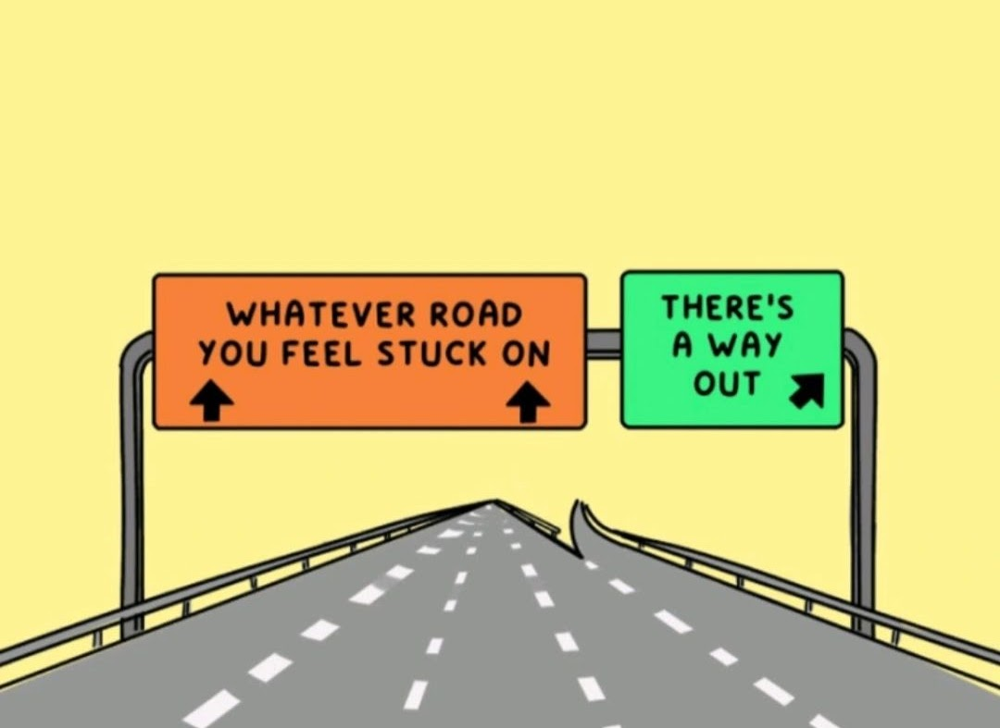
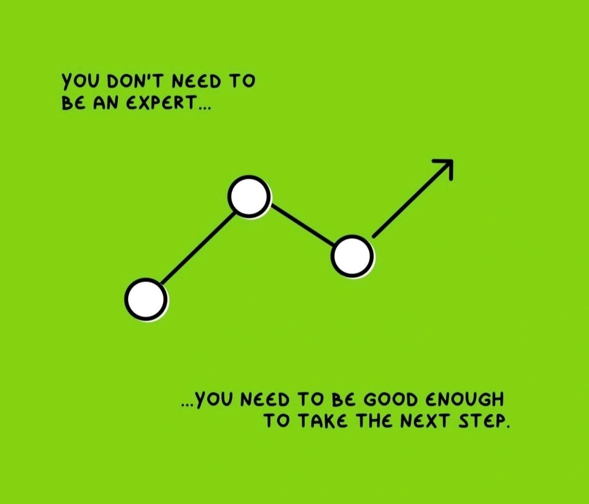

Ramadan Spiritual Growth - The Power of Du'a - Recording
Watch our latest workshop session on: The Power of Du'a.
Watch our latest workshop session on: The Power of Du'a.

Life has a way of testing us. At times, we find ourselves in situations where everything feels stagnant. Doors appear locked, paths seem blocked, and hope dwindles. These moments, though heavy and daunting, are opportunities to strengthen our trust in Allah and act with perseverance.
As Muslims, we believe that even the most difficult challenges can be overcome. Allah has provided us with a blueprint for navigating these trials. He promises in the Qur'an:
وَمَن يَتَّقِ ٱللَّهَ يَجْعَل لَّهُۥ مَخْرَجًۭا وَيَرْزُقْهُۥ مِنْ حَيْثُ لَا يَحْتَسِبُۚ وَمَن يَتَوَكَّلْ عَلَى ٱللَّهِ فَهُوَ حَسْبُهُۥٓۚ
"And whoever fears Allah – He will make for him a way out and provide for him from where he does not expect. And whoever relies upon Allah – then He is sufficient for him."
(Surah At-Talaq: 2-3)
This ayah serves as a timeless reminder that no matter how tight the situation, there is always an escape plan designed by Allah. Here's how we can apply this divine formula:
1. Fear Allah: Being mindful of Allah's commands and staying within His boundaries opens doors to countless blessings. Taqwa (God-consciousness) isn't just about avoiding sin but striving to do good in all circumstances.
2. Trust in Allah: True tawakkul (reliance on Allah) means trusting His wisdom, even when the solution isn't visible. It is believing that ease will come from places we least expect because Allah's knowledge encompasses everything.
3. Take Action: Tawakkul doesn't mean sitting back passively. We must make an effort, plan, and do our best while leaving the results to Allah. This balance of action and trust leads to ultimate success.
💡 Here are simple yet effective steps to apply when you feel stuck:
Turn to Allah in solitude. Use the power of dua to pour out your worries and seek His guidance. Allah says:
وَقَالَ رَبُّكُمُ ٱدْعُونِىٓ أَسْتَجِبْ لَكُمْ
"And your Lord says, 'Call upon Me; I will respond to you.'"
(Surah Ghafir: 60)
No matter how overwhelming the situation seems, take small, consistent steps toward improvement. Each effort counts, and Allah blesses sincerity.
Even in hardship, focus on the blessings you still have. Gratitude unlocks more blessings, and hope keeps the heart connected to Allah's mercy. Allah reminds us:
لَئِن شَكَرْتُمْ لَأَزِيدَنَّكُمْ
"If you are grateful, I will surely increase you."
(Surah Ibrahim: 7)
Every challenge is paired with ease. Allah emphasises this twice in Surah Ash-Sharh:
فَإِنَّ مَعَ ٱلْعُسْرِ يُسْرًا. إِنَّ مَعَ ٱلْعُسْرِ يُسْرًا.
"For indeed, with hardship comes ease. Indeed, with hardship comes ease."
(Surah Ash-Sharh: 5-6)
This is a profound promise from Allah that after every difficulty, relief is near. The same situation that burdens us today can become a source of blessings tomorrow.
Dear brothers and sisters, life will always present challenges, but they are temporary. Allah does not burden a soul beyond what it can bear (Surah Al-Baqarah: 286). Hold tight to your faith, make an effort, and trust in Allah's divine wisdom.
When we combine patience, reliance on Allah, and consistent effort, we transform adversity into an opportunity for growth. Trust that Allah has your back, and soon you'll see the light breaking through the storm.
Keep walking, keep trusting, and keep striving – because with Allah, there's always a way out.

Bismillah, in the name of Allah.
In our pursuit of success, it's common to feel like we're falling short if we don't have all the answers or aren't fully "qualified" for the next big step. But here's a comforting truth: mastery isn't a prerequisite for progress. You don't need to be an expert to move forward…you just need to be good enough to take the next step. Hey, the next step isn't always so huge.
Every expert was once a beginner, facing uncertainty and making small, incremental steps. It's those early steps, often taken with limited knowledge, that eventually add up to real progress. Rather than waiting to perfect every skill, focus on being just "good enough" to move forward. Allah encourages this step-by-step approach in the Qur'an when He says:
وَقُلْ رَبِّ زِدْنِي عِلْمًا
And say, 'My Lord, increase me in knowledge.'
(Surah Taha, 20:114)
This verse reminds us that knowledge and growth are continual processes. By taking even the smallest steps forward, we create opportunities for Allah to bless us with further knowledge and guidance. Waiting until we feel "perfect" can mean we miss out on invaluable learning experiences that come only with action.
Here's why taking that step, even if you don't feel fully ready, is so crucial:
1. Experience is the Best Teacher
Real growth doesn't come from theory alone; it comes from action. When you step into new experiences, you learn firsthand, far more than you would by waiting for the "perfect" moment. Every project you start, every risk you take, and every challenge you face adds to your experience and skills, allowing you to learn in ways that only doing can teach.
The Prophet Muhammad ﷺ himself embodied this principle. He didn't wait to gain mastery over every challenge he faced but took action with trust in Allah. His steps inspire us to move forward with what we know, trusting in Allah's guidance along the way.
2. Growth Happens in the Process
Moving forward pushes you out of your comfort zone, and growth is a natural byproduct of that. Each new step tests your limits, building resilience, confidence, and skill. Allah assures us of His support as we take steps toward betterment:
إِنَّ اللَّهَ لَا يُغَيِّرُ مَا بِقَوْمٍ حَتَّىٰ يُغَيِّرُوا مَا بِأَنفُسِهِمْ
"Indeed, Allah will not change the condition of a people until they change what is in themselves."
(Surah Ar-Ra'd, 13:11)
This verse highlights that transformation comes through taking action. As we work on improving ourselves, we step into Allah's promise of support and growth.
3. Every Small Step Counts
Progress isn't about making giant leaps but about consistent, manageable strides. Many people wait for the "perfect" time, the "perfect" skills, or the "perfect" conditions to make a move, but this is often a barrier to growth. Small, steady steps will always get you closer to your goal than waiting for the elusive "right moment." Remember, perfection is not required to move forward; Allah values the consistent efforts we put forth.
The Prophet ﷺ said, "The most beloved deeds to Allah are those done consistently, even if they are small." (Sahih Bukhari).
Every small action we take, whether it's learning a new skill, taking on a new responsibility, or simply stepping out of our comfort zone…it draws us closer to our larger aspirations.
If you've been holding back, remember that progress is made up of small, manageable steps. Here are some practical ways to move forward, even if you don't feel like an expert:
Ask Yourself, "What Can I Do Right Now with What I Know?"
Identify one step you can take today. It doesn't need to be big; just enough to keep moving forward. For example, start a new project, apply for that role you feel "almost" ready for, or speak up in that meeting.
Focus on Learning, Not Perfection!
Aim to grow with each action rather than perfect every skill before you start. This perspective frees you from the pressure of "being perfect" and lets you enjoy the process of learning.
Embrace Mistakes as Learning Opportunities
Each mistake is a stepping stone toward mastery. When we put in the effort, we get closer to Allah's promise of guidance:
وَالَّذِينَ جَاهَدُوا فِينَا لَنَهْدِيَنَّهُمْ سُبُلَنَا
"And those who strive for Us—We will surely guide them to Our ways."
(Surah Al-Ankabut, 29:69)
In this journey, don't wait to feel like an expert. The path itself will teach and shape you, as every step forward draws you closer to your goals and strengthens your relationship with Allah if it's done with the correct intentions.
Progress is more about movement than mastery. Take what you know, embrace the journey, and keep moving forward — because forward movement, no matter how small, is always progress.